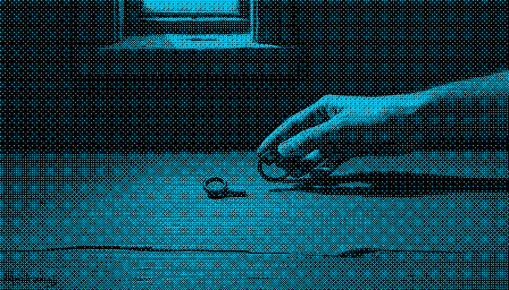
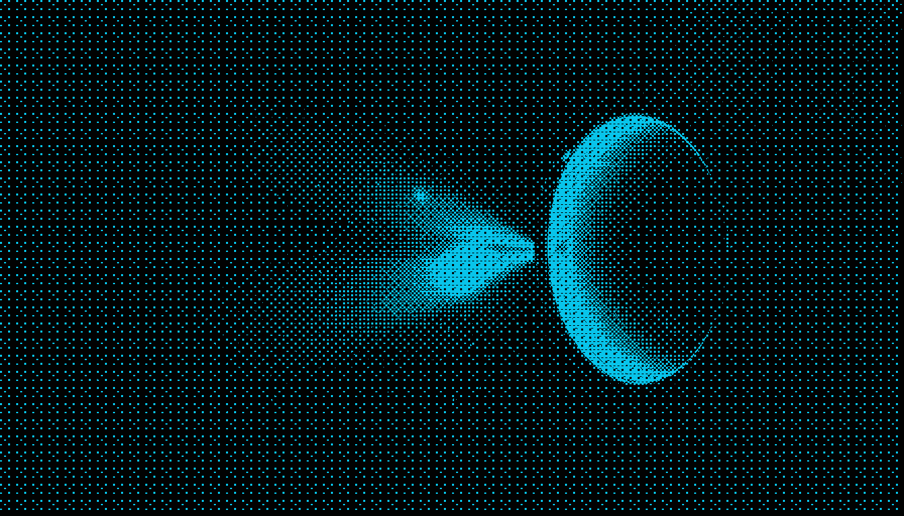

design pipeline · capability check · 2026-08-22
If you said launch design for flintted, this is what you would get.
Twelve of thirteen stages already gate green, and that is exactly the problem: the gates check that a file exists, never that the artwork coheres. Below is the real command output, the failure it did not catch, and the stage that was missing — now built and run over all 28 plates.
1 · What the command actually prints
Verbatim from
design-pipeline.py status /Users/vedhith/Developer/flintted. Not a summary.
/Users/vedhith/Developer/flintted theme=(none declared) GATE PASS S0 Skeleton green (1 artifact(s)) GATE PASS S1 Identity brief (1 artifact(s)) GATE PASS S2 Reference sheet (1 artifact(s)) GATE PASS S3 Theme briefs (1 artifact(s)) GATE PASS S4 Plates (29 artifact(s)) GATE PASS S5 Theme locked (1 artifact(s)) GATE PASS S5c Character (3 artifact(s)) GATE PASS S6 Wireframe (1 artifact(s)) GATE PASS S6i Interaction map (1 artifact(s)) GATE PASS S7 Themed pages (5 artifact(s)) GATE PASS S8 Shot critic (15 artifact(s)) GATE PASS S9 Picker (1 artifact(s)) GATE FAIL S10 Applied + gated - design/GATES.md: 0/1 file(s) present at >= 400 bytes NEXT: S10 Applied + gated
So the machine answer is “you are on S10.” The machine answer was wrong.
2 · What those green gates shipped
S3 and S4 both passed. Here is one plate from each of the five worlds they produced, at one size so that only the medium varies. Two of the five style blocks ask for a photograph in writing. A site cannot cohere while its own prompt file requests an oil painting for one section and deep-ocean photography for another — and no existence gate can see that.


Five lightings, five focal lengths, five depths of field. Your words: “a bunch of real photos that don’t make sense… the site just doesn’t fit together.”
3 · The stage that was missing — S4.5, treatment
flintted/design/PRIOR-ART.md already diagnosed this and named the
fix; nothing had built it. Two findings from that file decide the design.
“At 4 steps, schnell renders the subject and treats style adjectives as
decoration — you cannot prompt your way to a painting.” And:
“Nothing was applied to the images after they were generated… every reference has
that stage. It is the whole trick.” So coherence is bought after the render, by
destroying every plate identically: coarse ordered halftone, scanline bias, 1-bit
posterise, colorised to one ink on one paper. Mechanic taken method-only from
Nous Research.


4 · All twenty-eight, one material
Every plate flintted has, through one call, one ink, one paper. Each is
captioned with its real render seed from
themes/PLATES.json — machine origin printed rather than hidden, the third
mechanic taken from Nous. Flintted stored every seed and had never shown one.
5 · What the stage bought, measured
| Before | After | Why it matters |
|---|---|---|
| 5 extracted palettes | 1 ink + 1 paper | The unifier is a process every image passes through, not a colour scheme. Five separately-lit worlds provably does not cohere. |
| 36.0 MB of source PNGs | 1.4 MB | 26× smaller. This closes the one open item in PERF.md, which required
resizing and AVIF/WebP before ship. 1-bit halftone compresses instead. |
| Hands, faces, invented signatures | eaten by the dither | The model’s tells stop being a prompt request that already failed once, and become unreadable at the treatment’s dot depth. |
| S5 extracts a palette from the plates | palette is locked upstream | S4.5 inverts S5. Once the ink and paper are chosen, extraction has nothing left to discover — this is a real change to the stage order, not a new script. |
| “Render a beautiful scene” | “render a legible silhouette” | The generator’s job shrinks and the treatment supplies all the style — deterministic instead of a dice roll. |
6 · What is still not built — named, not hidden
- S4.5 is not in
PIPELINE.mdyet. The script exists and has run; the stage block and its gate do not, so nothing forces it. Until that lands, this is a tool rather than a stage. - The ink was chosen, not derived.
#08c4eais Cold Room’s extracted accent, reused. Which ink flintted ships is your pick, and it is a one-word answer that re-renders all 28 in about a minute. - No Mobbin or Figma call in this session. Your research-then-pipeline rule says a
new surface must be sourced to a gold-standard product with the MCP wired. The
references here came from
PRIOR-ART.md, which did do that work — but I did not add to it. - Railway’s alternative is untested. PRIOR-ART names two ways to cohere — Nous’s one-ink treatment, and Railway’s one continuous painted world with real UI inlaid on top. Only the first is built. The second is the one that keeps the live terminal.
- The mascot is unresolved. S5c gates green on the parametric SVG rig you rejected. The Duolingo/Rive row in prior art is the right method; the craft inside it is not there yet, and PNGs out of the plate tool were the wrong answer.